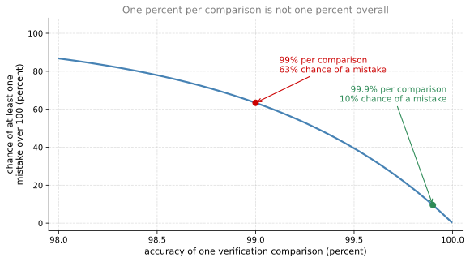
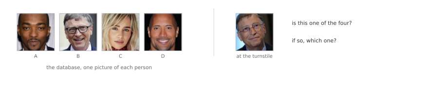
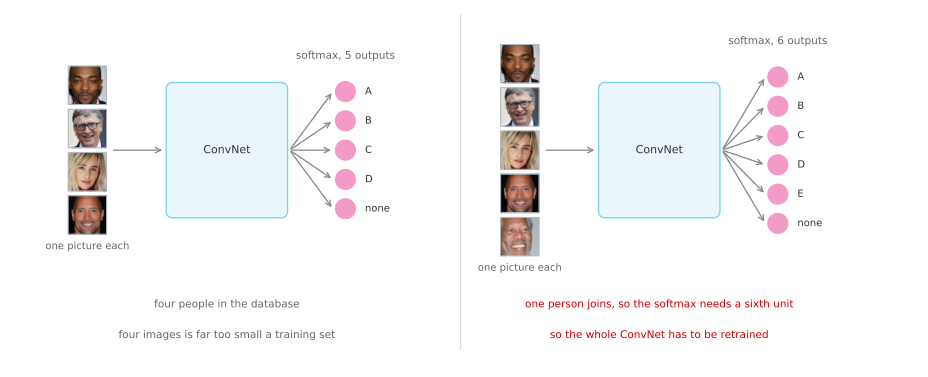
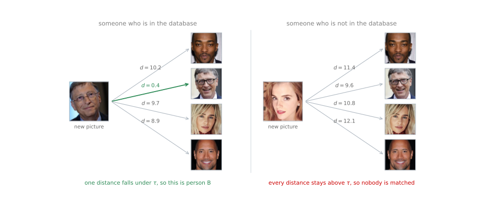

Face Recognition and One Shot Learning
deep-learning
convolutional-neural-networks
computer-vision
face-recognition
one-shot-learning
verification
Why recognition is harder than verification, why a softmax cannot learn from one picture per person, and how a learned similarity function solves both.
A camera above an office turnstile watches someone walk up, works out who they are, and opens the door without an ID card ever being swiped. Two separate things have to work for that.
The system has to confirm that it is looking at a live human rather than a printed photograph held up to the lens. That is liveness detection, and it can be trained as ordinary supervised learning, predicting live human versus not a live human. It is a real problem, and a system that skips it can be walked through with a printed ID card, but it is not what these pages are about.
The other half is working out whose face it is. That is where the interesting learning problem sits.
Verification Versus Recognition
The face recognition literature separates two problems that sound alike and are not.
Face verification takes an input image together with a name or an ID, and reports whether the input image really is that of the claimed person. The claim arrives with the picture, and the answer is yes or no. This is sometimes called the one to one problem, because one picture is checked against one claimed identity.
Face recognition is the harder one. There is a database of \(K\) persons, the input is an image with no claim attached, and the system has to output the identity of whichever of those \(K\) persons it is, or report that the face belongs to none of them.
Recognition is harder than verification, and the reason is worth spelling out with numbers.
Suppose a verification system is 99 percent accurate. On its own that does not sound too bad. Now put it inside a recognition system with \(K = 100\) people in the database. The input image gets compared against all 100 entries, so there are a hundred chances to make a mistake rather than one, and a one percent error on each comparison accumulates.
If the comparisons went wrong independently of one another, the chance of getting through all 100 with no error at all would be \(0.99^{100}\), which is about 37 percent. The system would therefore make at least one mistake on roughly two out of every three faces it saw. To get an acceptable recognition error on a database of 100 persons, the verification component underneath needs to be something like 99.9 percent accurate, and quite possibly better than that.

So the sensible plan is to build a face verification system as the building block, get its accuracy high enough, and then use that same component inside a recognition system. The rest of this page sets up the problem that makes even verification difficult.
Review Questions
1. A colleague says their system is “a face recognition system, it just checks whether the face matches the badge”. Which of the two problems is it actually solving?
TipAnswer
Verification. An identity arrives with the picture, in the form of the badge, and the system only has to confirm or deny that one claim. It is the one to one problem. Recognition would mean handing the system a face with no badge at all and asking it to name the person out of a database of \(K\), or to say that the person is not in it.
1. Why does a verification accuracy that seems perfectly respectable become unacceptable inside a recognition system?
TipAnswer
Because recognition runs the verification comparison \(K\) times for every face it sees, once against each entry in the database, so the chance of a mistake accumulates across all \(K\) comparisons. A one percent error looks small until it is given a hundred opportunities. The larger the database, the higher the per-comparison accuracy has to be for the overall system to stay usable, which is why a database of 100 persons wants something nearer 99.9 percent.
One Shot Learning
One of the reasons face verification is hard is that it has to be solved from a single picture. For most face recognition applications you need to recognize a person given just one image of that person’s face, because the employee database holds one photograph per person and nothing more. This is the one shot learning problem, and historically deep learning algorithms do not work well when there is only one training example.
Take a database of four pictures of employees in an organization. Someone shows up at the office and wants to be let through the turnstile. Despite the system having seen only one image of that person, it has to work out that this is the same person. And if someone who is not in the database shows up, it has to work out that this is none of the four.

Why a Softmax Does Not Work
One approach you could try is the one every classification problem so far has used. Feed the image of the person into a ConvNet, and have it output a label \(y\) through a softmax unit with four outputs, or perhaps five, the fifth standing for none of the above.
This really does not work well, for two separate reasons.
The training set is far too small. Four images, one per person, is nowhere near enough to train a robust neural network for this task.
And the shape of the output is tied to the size of the database. If a new person joins the team there are now five persons to recognize, so the softmax needs six outputs. Retraining the ConvNet every time somebody is hired is not a good approach.

Learning a Similarity Function
To make this work, learn a similarity function instead of a classifier. You want a neural network to learn a function, which will be written \(d\), that takes two images as input and outputs the degree of difference between them.
\[ d\big(\text{img}_1, \text{img}_2\big) = \text{degree of difference between the two images} \]
If the two images are of the same person, you want \(d\) to output a small number. If the two images are of two very different people, you want it to output a large number.
At recognition time, pick a threshold \(\tau\), which is a hyperparameter. If the degree of difference between two pictures comes out less than or equal to \(\tau\), predict that they are the same person. If it comes out greater than \(\tau\), predict that they are different persons.
\[ d\big(\text{img}_1, \text{img}_2\big) \le \tau \;\Rightarrow\; \text{same person}, \qquad d\big(\text{img}_1, \text{img}_2\big) > \tau \;\Rightarrow\; \text{different persons} \]
That is the face verification problem solved, assuming such a \(d\) can be built. To use it for a recognition task, apply it pairwise. Given the new picture, use \(d\) to compare it against the first image in the database, and it might output a very large number, say 10. Compare it against the second image and, because those two happen to be the same person, it should output a very small number. Do the same for the rest of the database. Whichever comparison comes back smallest, provided it falls under \(\tau\), names the person.
If someone who is not in the database shows up, all of the pairwise comparisons come back large, and the system reports that this is none of the persons in the database.

Notice how this solves the one shot learning problem. Nothing about \(d\) depends on how many people are in the database, because \(d\) only ever looks at two pictures at a time. So long as the network can take a pair of images and tell you whether they show the same person or different persons, adding a fifth person to the team is a matter of storing one more picture. Nothing is retrained, and the system just works.
Review Questions
1. What are the two things that go wrong when a softmax classifier is pointed at the turnstile problem?
TipAnswer
The training set and the output shape. There is only one picture per person, which is nowhere near enough data to train a robust network for the task. And the number of softmax units is fixed to the number of people plus one for none of the above, so every new hire changes the architecture and forces a retrain of the whole ConvNet.
1. The similarity function \(d\) is trained once and never retrained when the database changes. Why is that possible?
TipAnswer
Because \(d\) takes two images and reports how different they are, and that question has nothing to do with the database. The database only enters at recognition time, as the set of pictures \(d\) is run against. Adding a person adds one more pairwise comparison, and removing a person removes one, neither of which touches a single parameter of the network. A softmax has the opposite property, because the identity of every person is baked into a specific output unit.
1. What is \(\tau\), and what happens to the system if it is set too low?
TipAnswer
\(\tau\) is the threshold on \(d\), a hyperparameter, and it is what turns a distance into a yes or no decision. Two pictures are called the same person when \(d \le \tau\) and different persons when \(d > \tau\). Setting \(\tau\) too low makes the system demanding, so genuine employees whose new photograph differs a little from the stored one get distances above the threshold and are turned away. Setting it too high has the opposite failure, letting strangers through.
1. Where does the number 10 in the figure above come from, and would a different network give the same number?
TipAnswer
Nowhere in particular, and no. It is whatever \(d\) happens to output for a pair of pictures of different people, and its scale depends entirely on the network that computes it. What matters is not the absolute value but the gap, meaning that pairs of the same person land well below \(\tau\) and pairs of different persons land well above it. A network whose distances all sat between 0 and 1 would work just as well with a correspondingly smaller \(\tau\).
1. Why do we learn a function \(d(\text{img}1, \text{img}2)\) for face verification? (Check all that apply.)
Given how few images we have per person, we need to apply transfer learning.
We need to solve a one shot learning problem.
This allows us to learn to predict a person’s identity using a softmax output unit, where the number of classes equals the number of persons in the database plus 1 for a final “not in database” class.
This allows us to learn to recognize a new person given just a single image of that person.
TipAnswer
b and d. Those two are the same fact seen from either side. One shot learning is the name of the difficulty, that there is a single picture per person and no prospect of more, and recognizing a new person from that one picture is what solving it buys you.
a names a real technique that is genuinely useful here, since the network computing \(d\) is usually started from weights trained on some other large dataset. But transfer learning is about where the parameters come from, not about what the network is asked to output. Even with unlimited data to train on from scratch, a classifier over the database would still break the moment somebody joined or left, so \(d\) would still be the thing to learn.
c is the approach \(d\) exists to replace, and it has the failure backwards. The “not in database” class does not rescue it, because the number of output units still equals the number of persons plus one, so it still changes with every arrival and departure, and every such change means a new architecture and a retrain.
Where This Leaves Things
The whole problem has been reduced to one function. Given a network that computes \(d\), verification, recognition, and the one shot difficulty all fall out. What is still missing is the part that actually makes \(d\), meaning an architecture that turns a picture into something comparable and an objective that trains it. That is what Siamese Networks and the Triplet Loss builds.
References
The faces in the figures on this page and the next are from the Pins Face Recognition dataset, which holds 105 identities collected from Pinterest and aligned with dlib. They are labeled by letter rather than by name.
- Toy, B. (2019). Pins face recognition [Data set]. Kaggle. https://www.kaggle.com/datasets/hereisburak/pins-face-recognition